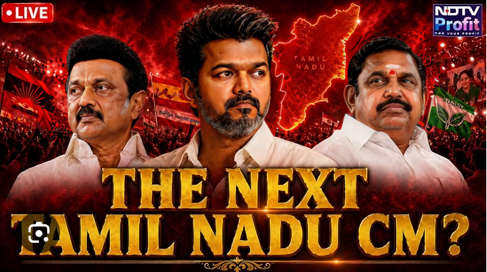

Election Statistics 2026
The Tamil Nadu Assembly Election 2026 became one of the most closely watched elections in the state’s political history. Citizens from all districts actively participated in the democratic process, creating a high voter turnout across urban and rural constituencies. More than 6.3 crore registered voters cast their votes to elect representatives for all 234 assembly constituencies in Tamil Nadu.
The election witnessed intense competition among major political parties including DMK, AIADMK, TVK, NTK, BJP, Congress, and several regional alliances. Political campaigns focused on employment, education, women welfare, economic development, infrastructure, and youth empowerment. Large public meetings, social media campaigns, and television debates played a major role in influencing voters throughout the election season.
According to election officials, the overall voter turnout crossed 74%, showing strong public interest in the future governance of the state. Several constituencies experienced tight competition, with candidates winning by very narrow vote margins. Chennai, Coimbatore, Madurai, Tiruchirappalli, Salem, and Tirunelveli were among the districts that received major political attention during the counting process. read more
- Total Constituencies: 234
- Registered Voters: 6.3 Crore+
- Overall Voter Turnout: 74.5%
- Counting Centers: 75
- Major Battle Constituencies: Coimbatore South, Chepauk, Madurai Central
- Highest Turnout District: Dharmapuri
- Increased participation from young and first-time voters